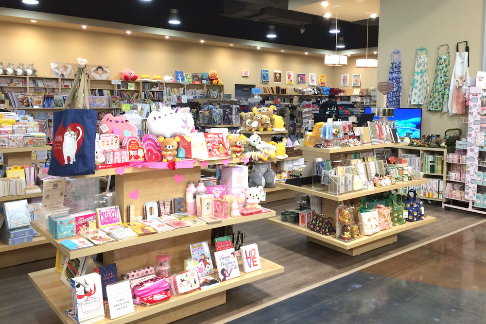
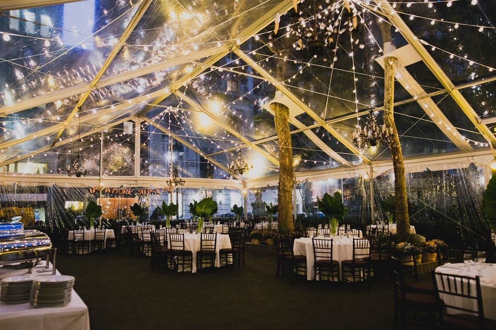
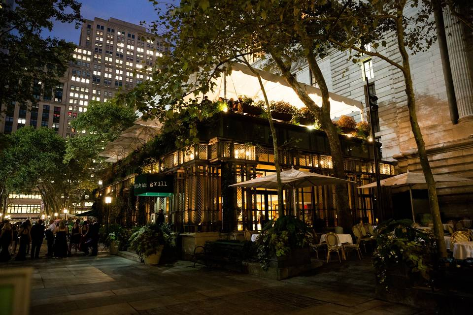

❅ You will find much more than books at New York City's largest Japanese bookstore.
❅ In addition to the shop's main items, such as Japanese books, magazines, comics, music and English books on Japan, there is also a good selection of imported pens and mechanical pencils, origami paper, stationery sets and coil-bound notebooks.

Bryant Park Ice Skating
1065 Avenue of the Americas, New York, NY
❅ The Rink opens at noon on opening day, October 28, 2022. The Rink is open rain or shine. The park closes if weather conditions are severe.
Restaurant in 42 St-Bryant Park
Bryant Park Grill
25 W 40th St, New York, NY 10018
❅ Bryant Park Grill has become one of Manhattan's loveliest public spaces, and it has an open-air café for casual eating and the Bryant Park Grill for serious meals.


Transfers from 42 St-Bryant Park
59 St-Columbus Circle
Central Park
Brighton Beach
Museum of Natural History
Fordham Rd-Rose Hill
59 St-Columbus Circle
59th St-Columbus Circle
Central Park
Fordham Rd-Rose Hill
Barclays Center
Jackson Hts-Roosevelt Ave
Lexington Ave-53rd St
47-50 Sts-Rockefeller Ctr
Flushing-Main St<
Elmurst Av
82 St-Jackson Hts
Queensboro Plaza
Grand Central
Times Square-42 St
34 St-Hudson Yards


{kind=link}